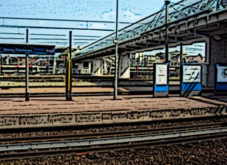

Massy-Palaiseau
Communes de Massy, Palaiseau, Verrières-le-Buisson



La gare de Massy Palaiseau, gare principale de ce pôle, est une des grandes gares située au Sud de Paris. Elle est le point de passage de la plupart des voyageurs qui se rendent vers la zone d'activité de Saclay-Orsay. La présence de la gare TGV de Massy augmente encore son attractivité.
L'importance de ce pôle a été identifiée dans le plan du Grand Paris Express qui prévoit d'y faire passer la ligne 18 du métro.
La configuration géographie de la gare permet d'en faire une grande gare terminus et de correspondances.
Avec le passage de 3 tangentielles la création de la ligne 18 du métro et la desserte par la ligne 13 cette zone sera l'une des zone les mieux desservies par les transports en Île-de-France.
Projets asssociés à ce pôle
Stations incluses dans le périmètre
| Nom | Correspondances | Communes |
|---|---|---|
| Les Baconnets | ||
| Le Clos de Verrieres | ||
| Marechal Konig | ||
| Massy - Palaiseau | ||
| Massy - Verrières | ||
| Palaiseau | ||
| Palaiseau - Paul Langevin |